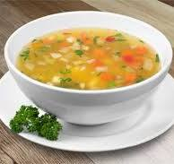

Soup

Ingredients
- carrots
- celery
- tomatoes
- potatoes
- green beans
- corn
- peas
- yellow onion and garlic
Step by Step
- Heat olive oil in a large pot over medium-high heat.
- Add onions, carrots, and celery and saute 4 minutes then add garlic and saute 30 seconds longer.
- Add in broth, tomatoes, potatoes, parsley, bay leaves, thyme and season with salt and pepper to taste.
- Bring to a boil, then add green beans.
- Reduce heat to medium-low, cover and simmer until potatoes are almost fully tender, about 20 - 30 minutes.
- Add corn and peas and cook 5 minutes longer. Serve warm.